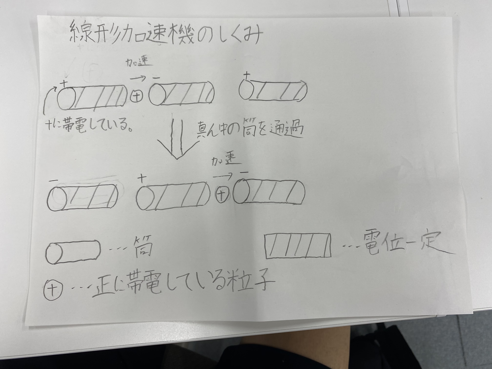
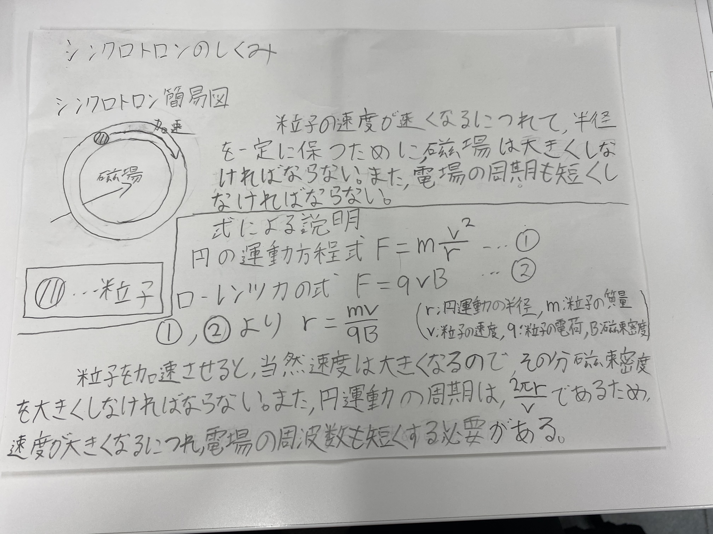

調査内容
- 加速器の仕組み
- 加速器の歴史
- 代表的な加速器
- 参考
加速器の仕組み
加速器の歴史
もう少し先の歴史を調べてみると、加速器の歴史ーKENでは、〔２〕”
はじめの頃の加速器は粒子の加速に高電圧を利用するものでしたが、1930年代になると、高周波の電場を利用するものが考案され、線形加速器（リニアック）や磁場を使った
円型の加速器サイクロトロンが生まれました。
1944年に位相安定性の原理が発見され、この原理を加速に用いるシンクロトロンが誕生しました。さらに1952年には四重極磁石などを用いた強収束の原理が発見され、粒子を加速する
エネルギーはそれまでの１万倍から10万倍という、飛躍的な進歩を遂げました。”と書かれている。この異様な発達の速度から、加速器は物理学者がどれほど重要視しているのか、
また、アーネスト・ラザフォードがどれほど偉大な発見をしたかがうかがえる。
代表的な加速器
線形加速器
これを次のように図式化してみた。

シンクロトロン
これについて次の図を使って説明する。

参考
〔１〕、〔３〕加速器‐Wikipedia https://ja.wikipedia.org/wiki/%E5%8A%A0%E9%80%9F%E5%99%A8
〔２〕加速器の歴史ーKEN https://www2.kek.jp/ja/newskek/2003/novdec/kasokuki.html#:~:text=%E3%81%AF%E3%81%98%E3%82%81%E3%81%AE%E9%A0%83%E3%81%AE%E5%8A%A0%E9%80%9F%E5%99%A8,%E3%83%88%E3%83%AD%E3%83%B3%E3%81%8C%E8%AA%95%E7%94%9F%E3%81%97%E3%81%BE%E3%81%97%E3%81%9F%E3%80%82
〔４〕シンクロトロンとは‐コトバンクhttps://kotobank.jp/word/%E3%82%B7%E3%83%B3%E3%82%AF%E3%83%AD%E3%83%88%E3%83%AD%E3%83%B3-81567